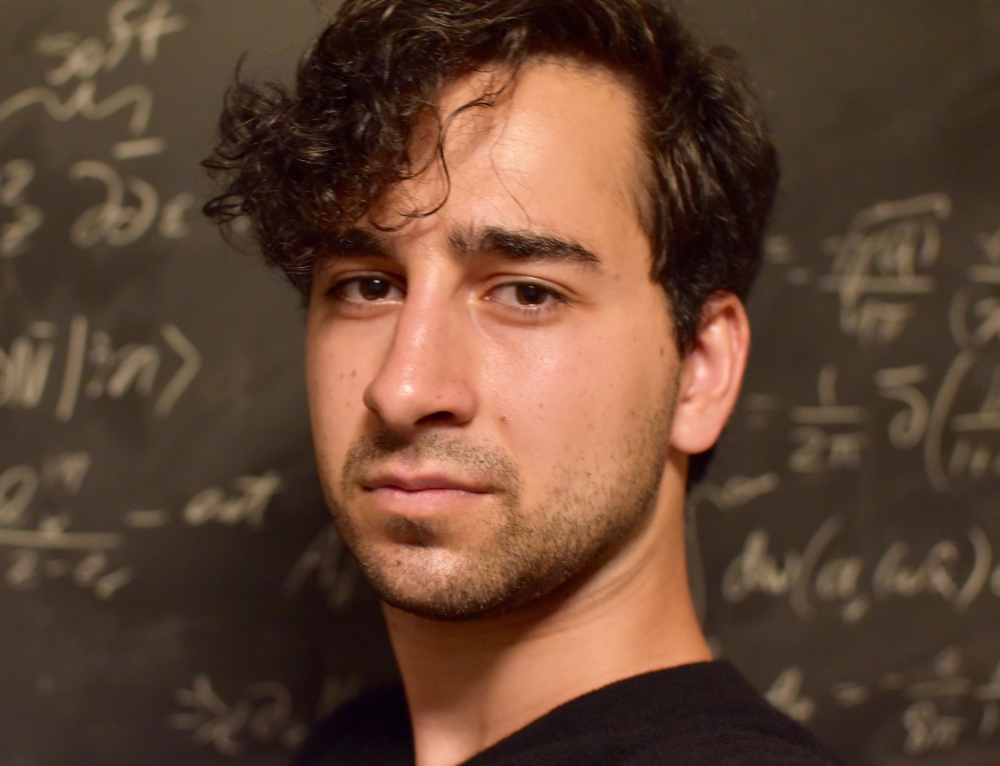

About Me
I'm a PhD student in theoretical physics at Harvard. I received my B.S. in physics and M.S. in mathematics from Yale in 2018. My research interests lie in better understanding the increasingly deep web of relationships between quantum field theory, statistical physics, gauge theory, and gravity. I performed my undergraduate research under professor David Poland, studying conformal field theory in dimensions three and four using the bootstrap program.
Previously, I worked for Google on developing convolutional neural network (CNN) models for computer vision and face recognition for the internet of things, connecting high-level android code to low-level C++ libraries for running and quantizing the underlying TensorFlow-based networks. I also perform research in computational neuroscience at the Murray Lab, under Dr. John Murray at Yale. My work is on studying the dynamics giving rise to working memory in recurrent neural networks (RNNs). Understanding these dynamics can give insight into how disorders like schizophrenia arise as defects in these mechanisms.
My past collaborations with Dr. Erik Schnetter at the Perimeter Institute for Theoretical Physics, focused on finding ways around the curse of dimensionality in Einstein's field equations. You can learn more about this work from our recent arXiv paper and implementation on Github. If you find this package useful for any of your projects involving high-dimensional computing, feel free to reach out.
This website serves as a repository for some of my academic work, research, and personal projects. I hope you find something that you like.
Academic Papers and Publications

Bootstrapping the Minimal 3D Superconformal Field Theory
A paper written in collaboration with Aaron Hillman and my undergraduate advisor in physics, Professor David Poland, on applying the conformal bootstrap program to study a space of interesting conformal field theories (CFTs). In the past, the conformal bootstrap has had great success in pinning down the critical exponents of the famously impenetrable 3D Ising model to the highest precision ever achieved. Here, we present a bootstrap study of the space of 3D CFTs sharing the same parity symmetry and relevant operator structure as the 3D Ising model. This space is diagrammed and elaborated upon in this beautifully-written Quanta article. We note a new kink that lies near the conjectured scaling dimensions of the 3D N = 1 Ising model: the Ising model's supersymmetric cousin. A noted prior work conjectures that this supersymmetric theory may in fact be emergent at the boundary of topological superconductors. By combining a scan over three-point function coefficients together with an analytic formula derived form supersymmetry that constrains the three-point correlators, we obtain tight bounds for the scaling dimensions and operator spectra of this model. Our results lead us to conjecture a surprising exact value for the 3-point coefficient ratio of this CFT. This then gives a conjectured exact analytic value for the scaling dimensions of the first two relevant scalars.(Summer 2018) [arXiv] [PDF] [Code Repository]

Magnetic Monopoles, ‘t Hooft Lines, and the Geometric Langlands Correspondence
My undergraduate thesis in mathematics under my advisor, Professor Philsang Yoo. Provides an overview of the Geometric Langlands correspondence from the point of view of physics. This thesis is based on the material I learned from my advisor's two seminar courses on the subject, a variety of independent reading, and by attending a conference on the same topic at the Perimeter Institute.(Spring 2018) [PDF] [Presentation Slides]

Sparse Grid Discretizations based on a Discontinuous Galerkin Method
A paper written in collaboration with Dr. Erik Schnetter at the Perimeter Institute for theoretical physics, on using the discontinuous Galerkin method together with sparse grids to evolve scalar wave equations in higher dimensional spacetimes. We developed a julia package, GalerkinSparseGrids.jl for the implementation of this theory, and present its results for 5+1 and 6+1-dimensional wave evolutions in the paper. This yields a significant computational step forward in the capacity to solve hyperbolic partial differential equations in higher dimensional space, and we hope to extend this work to Einstein's equations in an anisotropic spacetime.(Fall 2017) [arXiv] [PDF] [Code Repository]

Simple, accurate electrostatics-based formulas for calculating detachment energies of fullerenes
A paper written in collaboration with Dr. James Ellenbogen at the MITRE Corporation, published in Physical Review A, on deriving a simple analytic formulas via electrostatics-based methods to accurately calculate the values of electron affinities, ionization potentials, and capacitances of icosahedral carbon fullerenes. The aforementioned analytic formulae yield significant insight into both the physics of electron detachment in the fullerenes and shed light on prior investigations of the relationship between sizes of the fullerenes and their molecular capacitances.(Spring 2017) Physical Review A [Journal Link] [PDF]

Dynamic Memory in Recurrent Neural Networks II: KerasCog
Final Paper for Physics 471: Independent Research. Overview of the background behind the computational neuroscience of recurrent networks, and an introduction to the KerasCog package. KerasCog is a current MurrayLab collaboration to build a package for the simple construction and analysis of biologically-relevant artificial neural systems. It can be accessed and publicly downloaded here.(Fall 2016) [PDF]

Dynamic Memory in Recurrent Neural Networks I
Final Paper for Physics 471: Independent Research. Overview of the background behind the computational neuroscience of recurrent networks. Final Review and Progress Report of my computational research on dynamic memory in recurrent neural networks at the Murray lab.(Spring 2016) [PDF]

Graded Lie Algebras, Supersymmetry, and Applications
Final term paper on supersymmetry for Francesco Iachello's class on Group Theory, Lie Algebras, and their applications to physics. Many of the examples are taken from the material he provided me (c.f. the references section).(Fall 2015) [PDF]
Lectures and Lecture Notes

The Path Integral, Wilson Lines, and Disorder Operators
My lectures for Prof. Philsang Yoo's second-semester graduate seminar on the Langlands program. I define the ideas of quantum field theory for an audience of mathematicians. From here, I define the Wilson and `t Hooft line defect operators and elaborate on their relationship to the geometric Satake symmetries acting on both sides of the Langlands correspondence.(Fall 2017) [Lecture 1] [Lecture 2]

Recurrent Neural Networks (RNNs) and Applications
My lectures for Prof. Guy Wolf's course on deep learning theory and applications. I give a historical background for the motivation of the RNN, and the basic relevant definitions. From there, we go through several examples of how these networks can be applied for speech, image, and language processing, paragraph summary, and how they are relevant in computational neuroscience. In the second lecture, we focus on more technical topics such as vanishing/exploding gradients, and the memory problem. This motivates our introduction of new architectures like LSTMs and neural Turing machines.(Spring 2018) [Lecture 1] [Lecture 2]

3D Monopoles and the Equations of Bogomolny and Nahm
My final presentation for Prof. Philsang Yoo's first graduate seminar on the ideas of the geometric Langlands program. This is introductory paper introduces the ideas of gauge theory for a mathematical audience, and then uses those ideas to define SU(n) monopoles in 3D in terms of translation invariant solutions to the anti-self-dual instanton equations in 4D (see prior lecture notes on instantons and the ADHM construction). This study of magnetic monopoles on 3D space serves to motivate the ideas behind the Nahm Transform, which will be explored in greater depth next semester for my senior thesis.(Fall 2017) [PDF]

Course Notes: Geometric Langlands and Derived Algebraic Geometry
My set of handwritten course notes for the lecture series of Prof. Philsang Yoo's graduate seminar course on the Geometric Langlands program, viewed through the lens of Derived Algebraic Geometry.(Spring, Fall 2017) [Full Notes] [Part 1: Categorical Harmonic Analysis] [Part 2: Moduli Space of Bundles] [Part 3: Geometric Satake] [Part 4: Geometric Representation Theory] [Part 5: Intro to Derived Algebraic Geometry] [Part 6: Back to Basics] [Part 7: Singular Support] [Part 8: Revisiting D(Bun_G)] [Part 9: How to study D(Bun_G)] [Part 10: Factorization Structures] [Part 11: Fundamental Local Equivalence]

3D Conformal Field Theory and the Ising Model
A set of lectures given both as a final presentation for my research in CFT over the spring of 2017, as well as a related talk given in the Fall as part of the Yale graduate seminar in representation theory, as an attempt to introduce the ideas of higher-dimensional CFT to a more mathematical audience with some background in the ideas of the Virasoro algebra for the 2D case.(Spring, Fall 2017) [Spring Talk] [Fall Talk]

2D Conformal Field Theory and the Ising Model
These lecture notes are from the final presentation given in Professor David Poland's graduate seminar in conformal field theory and its applications. The notes are based on the results from a paper by Belavin, Polyakov, and Zamolodchikov on the applications of 2D conformal field to various critical systems.(Fall 2016) [PDF]

Lecture 2: ADHM, Hilbert Schemes, and the Heisenberg Algebra
This is my second lecture in Professor Frenkel's Representation Theory seminar. This talk continues the ideas of the prior, focusing on how the ADHM construction gives rise to a moduli space of solutions that can be compactified and resolved. In particular, although U(1) instantons are known not to exist in physics, the resolved compactification of the moduli space of U(1) instantons is nonempty, and in fact corresponds exactly to the Hilbert scheme of points on the complex affine plane. We investigate their homology rings and show that the algebraic structure is in fact intimately related to the Heisenberg algebra. This geometric realization is studied, in broad terms, by recognizing Hopf algebra structure both in the Heisenberg algebra and in the homology rings of the Hilbert schemes.(Fall 2016) [PDF]

Lecture 1: Instantons and the ADHM Construction
This is my first lecture given as part of Igor Frenkel's Graduate Seminar on Topics in Representation Theory. This talk introduces the ideas of Yang-Mills theories and explicitly derives the (anti-)self-duality conditions required for instantons to exist on Euclidean 4-space, and demonstrates how the ADHM construction gives rise to U(n) instantons of arbitrary topological charge.(Fall 2016) [PDF]

Preliminary Lecture: Fiber Bundles and Lie Groups
Preliminary notes written for a set of lectures prepared for Professor Igor Frenkel's Graduate Seminar on Topics in Representation Theory. The focus of my talks is on the ADHM construction of instantons, and studying the moduli space of instantons using tools in algebraic geometry to allow us to do calculations of the partition functions. These notes review prerequisite undergraduate material necessary for understanding the subsequent lectures: fiber bundles and Lie groups.(Fall 2016) [PDF]

Covariance, Contravariance, Manifolds, and their Flows
Lecture that I gave to the high school students participating in the Perimeter Institute's International Summer School for Young Physicists (ISSYP). Introduction of manifolds and vector fields to students with calculus background. Covered linear algebra topics such as direct sums and tensor products of vector spaces and co/contravariance. The end goal was to motivate the intuition behind the idea of a Lie Algebra/Lie Derivative in terms of vector flows.(Summer 2016) [YouTube]

Galois Representations, Cuspidal Eigenforms, and Maass Forms at 1/4
Notes written for a final lecture in Math 868 Spectral Geometry. A brief introduction to algebraic number theory, and then a focus on the correspondence between two dimensional representations of the absolute Galois group and Hecke/Maass eigenforms on the upper half plane.(Spring 2016) [PDF]

6j symbols and the Tetrahedron
Notes written for a final lecture in Math 501 Representation Theory. Exposition of the 6j symbols and the remarkable fact that geometric information about an associated tetrahedron volume gives asympototically correct estimates for the symbols themselves.(Spring 2016) [PDF]
Books

Representations of a Physical Universe
A book that I'm currently writing with my friend Aaron, covering the ideas of mathematical physics from the ground up. It is not meant as an introductory academic textbook, but rather as a pedagogical supplement to the more common texts on the same topics. We wish to emphasize ideas that, in our opinion, were not placed at high enough importance for a student entering the field to appreciate their weight. The book is intended to be open source, in the sense that anyone can access it online and edit it as they wish. This way, we can have close friends collaborate with us on Github so that together our ideas can make the text as pedagogically accessible as possible. It's coming along really nicely so far!(Summer 2018, Expect to publish in the Spring) [Github]

Complex Analysis: In Dialogue
A book I wrote back in high school on complex analysis. It was initially a set of notes written as a result of self-study over the Summer of 2013. Gradually, it grew into a larger pedagogical work. The dialogue of the book is in the style of Johann Joseph Fux's work Gradus ad Parnassum, a formal conversation between teacher and student at length on a large subject. You can see the type of fun I had as a 17 year-old, but its still fun to look back and re-read parts. Despite it being a teenager's first effort at textbook-writing, the book definitely has some charming parts. You can find it on Amazon here, but its off-sale right now for revision.(Fall 2013) [PDF]

Complex Analysis: Appendix of Color Plots
Accompanying color plots for students and readers to be able to visualize some of the complex functions mentioned in the above work. The plots were made in Java using elementary classes in complex-number arithmetic and graphics. You can find it on Amazon here.(Fall 2013) [PDF]